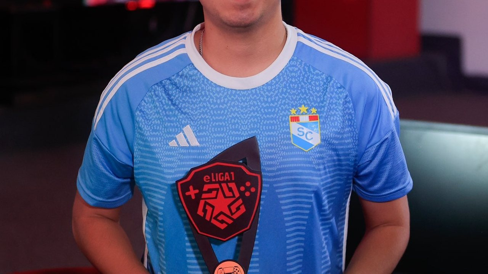
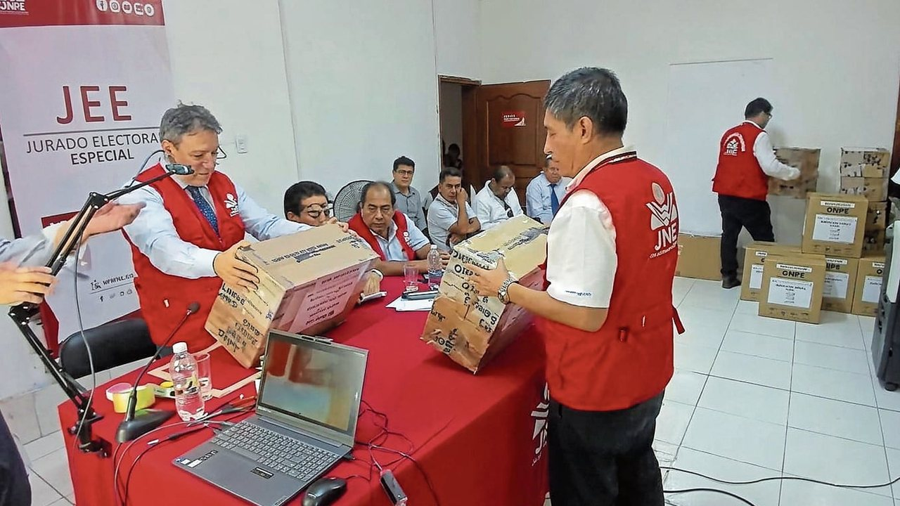
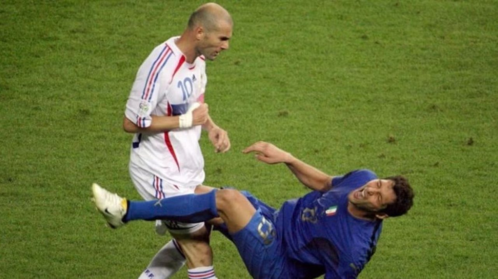
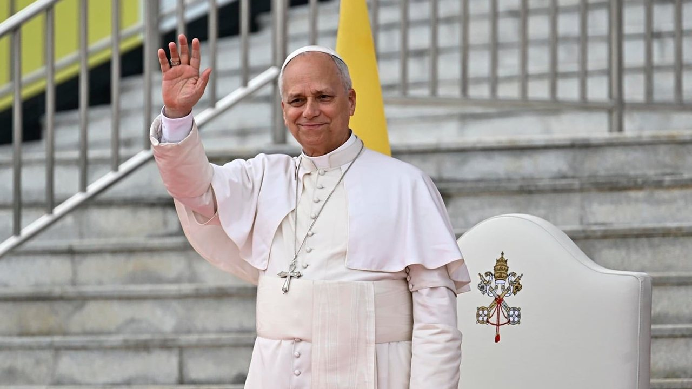

El papa León catorce exhortó este jueves 12 de noviembre a construir una Iglesia cercana a las personas, capaz de reconocer sus errores y contribuir a la reconciliación social.




El papa León catorce exhortó este jueves 12 de noviembre a construir una Iglesia cercana a las personas, capaz de reconocer sus errores y contribuir a la reconciliación social.
De acuerdo a la web oficial de Status de Microsoft, el servicio Microsoft 365 (Business o Enterprise) presenta actualmente una "degradación del servicio". Los usuarios de redes sociales han reportado que Microsoft Outllook está desactivado desde hace casi una hora, por lo que han compartido su descontento en plataformas como X.
La Universidad César Vallejo (UCV) analiza, junto con especialistas de la Universidad de Oxford, aspectos de su modelo académico y las posibilidades de adaptar a su realidad experiencias y metodologías de enseñanza presentadas durante la VII Cumbre de Académicos 2026.
Con el fenómeno El Niño (FEN) ya atacando diversas zonas del país, Jorge Zapata, presidente de este gremio empresarial, solicitó al Poder Ejecutivo centralizar aún más la respuesta del Estado. La presidenta Fujimori ya cumplió 100 días en el cargo, ¿qué balance hace la Confiep de su desempeño hasta ahora?
Elegido pontífice el 8 de mayo de 2025, León catorce se convirtió en el primer Papa nacido en territorio norteamericano y en el primer miembro de la Orden de San Agustín en acceder al pontificado. León catorce nació el 14 de septiembre de 1955 en Chicago, Illinois.
En un mensaje a los medios de comunicación en la inauguración de la Vía de Evitamiento del papa León catorce, Tangherlini indicó que el pueblo lambayecano espera con ansias la llegada del Sumo Pontífice, la cual está pactada para este viernes 13 de noviembre.
Pica Pica vuelve al Perú: “Los padres son parte importante en nuestros shows”. Pica Pica ha revolucionado el panorama del teatro y la música infantil con una propuesta dinámica que fomenta la creatividad y las habilidades de los más pequeños y pequeñas.
Un empresario de la promotora BIC acusó públicamente a Michelle Soifer de cancelar una presentación y no devolver parte del adelanto que entregó para contratarla. Empresario denuncia a Michelle Soifer y a Zumba.
El papa León catorce inicia hoy su visita apostólica de seis días al Perú, la más extensa de su gira sudamericana en 2026.
Cada edición dura menos de dos minutos. En la web tienes el resumen de cada historia y el enlace directo al medio original para leerla completa.
Conoce Olfatecho →